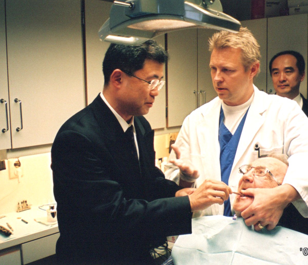
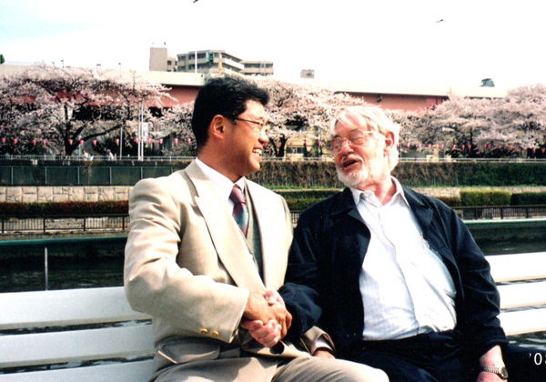
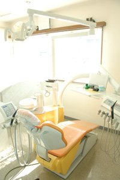
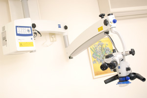
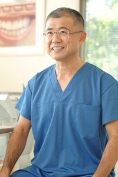
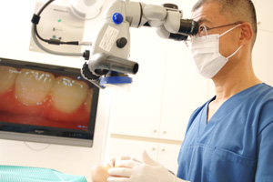
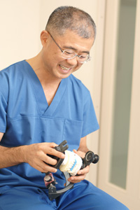

院長プロフィール
- 経歴
- 1982年3月 日本大学歯学部 卒業
- 1985年3月 日本大学大学院 卒業、歯学博士号授与
- 1985年4月～1989年 日本大学歯学部クラウンブリッジ学講座兼任講師
- 本厚木 水野歯科医院 勤務
- 1987年4月 相模原南病院 歯科に勤務
- 1990年1月 津江歯科医院に勤務
- 1995年3月 津江歯科医院 継承開設
・歯学博士
海外歯科研修会

スウェーデンで歯科専門医から歯科施術の講習を受講した。

ブローネマルク先生の最後の訪日に墨田川の花見見物
メディア・インタビューに津江院長が答えている、患者様に伝えたい言葉
喜多見駅から徒歩3分。住宅街に馴染むように「津江歯科医院」の看板が見えてくる。
出迎えてくれた二代目の津江明伸院長は、優しい笑顔が印象的な、とても真面目で誠実な方。
「常によりよい診療をするために、日々の勉強を欠かさないんですよ」と、にっこり微笑む。
雑誌の「歯を守る最高の名医」にも選ばれたことがある確かな技術は、その豊富な知識にも裏打ちされている。
先代が狛江に開業してから55年。一般歯科からインプラント治療、矯正治療まで津江院長の診療の幅は広く、地元になくてはならないクリニックとして厚い信頼を寄せられている。
「父のように人間性豊かな歯科医師でありたい」という津江院長に、日々の診療で感じる思いやお父さまから学ばれたこと、ご自身の健康作りなどプライベートなお話まで、たっぷりと語っていただいた。（インタビュー担当者）
―こちらを開業されたのはいつですか？

もともとは約55年ほど前に父が開業、私は1997年3月から後を継ぎ、院長を務めています。
このあたりは生まれ育った、とても馴染みのある場所なんですよ。
院内は、父が診療していた頃のアットホームな雰囲気は残しつつ、何回かリニューアル。
一昨年は、最新のマイクロスクープなどを完備した手術室も作りました。
そうやって、よりよい診療環境を目指し、日々、何かできないかと考えています。
患者さんは、お近くにお住まいの地元の方がほとんどですね。
小さいお子さんからご高齢の方まで幅広い年齢層の方がいらっしゃいますが、私が大学院で補綴を専門にしていたこともあり、入れ歯治療などを希望される、比較的ご年配の方や審美的治療を希望される女性も多くいらっしゃいます。
もう長く通ってくださる方も多く、何世代にもわたって診療させていただく患者さんも大勢いらっしゃるんですよ。
最近は歯科治療に対する意識が高い、いわゆるデンタルIQの高い方が増えてきているように思います。
お子さんの虫歯も減り、かわりに、歯並びに興味をお持ちになる親御さんが増えて、矯正治療を望まれる方が多くなってきましたね。
さまざまな治療内容を日々レベルアップさせながら診療に取り組んでおります。
―幅広い診療メニューをお持ちでいらっしゃいますね。
はい。広く全般的に学ぶことが好きなので、通常の一般歯科の診療はもちろん、最先端のインプラント治療や矯正治療も、もう20年以上ベテランの先生に指導を仰ぎながら、すべて私自身が診療にあたっています。毎年、国内各地で行われる学会をはじめ、海外の勉強会などにも積極的に参加、常に新しい情報を取り入れるよう努力しているんですよ。そうやって学ぶことは、以降の診療に必ず役立ってくると思います。例えば、矯正治療やインプラント治療について学んだ知識が、通常の一般歯科の治療にも応用できるなど、患者さんにフィードバックできる場面も多いですからね。
いいものをどんどん取り入れる姿勢でやってきましたから、虫歯治療も最新の無痛治療「3Mix法」を行っています。
被せ物も、それぞれの患者さんの症状に最適なものがご提案できるよう、いろいろと準備しています。そしていびきの治療もしています。
歯科医院でこういった治療ができることをご存知ない方も多いかもしれませんが、「スリープスプリント」というマウスピース型の器具を使うもので、実際に私自身が試してみて効果を実感したものです。
さまざまな治療をよりレベル高く行うためには最新の医療機器も欠かせませんから、マイクロスコープや顕微鏡なども導入。
同じ治療でも、日々努力をして進化し、確実にレベルアップしていきたいと思っています。
―そのなかでも、とくに力を入れていらっしゃる治療はありますか？

最近は、ブラキシズム（歯軋り）や顎関節症に非常に興味を持って診療にあたっています。
実は、私自身がブラキシズムで歯を咬み割ってしまったことがあって。
ブラキシズムは、していらっしゃらない方はいないというくらい、ほとんどの方がしているもの。気がついていない方もとても多いんですよ。
本当にひどい方は、歯が磨り減って欠けたり、虫歯にもなりますし、歯周病も悪化、お口の中の状態はかなり悪くなってしまうんです。
若い方よりも、年齢とともに悪くなっていくようですね。
私のように歯が割れてしまうのを未然に防ぎ、歯周病の悪化も食い止めるためにも、診療中に、「ブラキシズムをしていらっしゃるな」と思った患者さんには、すぐにご説明するようにしています。
―先生はずっと歯科医師を目指していらしたのですか？
父のような人間性豊かな歯科医師が大きな目標！
そうですね。やはり父の姿をずっと見て育ちましたから、もういつの間にか自然に歯科医師を目指すようになっていました。
育てられ方がよかったのか、ほかのことにはあまり興味をもつことなく来てしまいましたね（笑）。
父はとても明るく、患者さんから非常に慕われていた人だったんですよ。
「優しくて、とにかく楽しい先生だった」と、父から引き継いだ患者さんからも何度も伺いました。
確かに2、3年一緒に診療していた時のことを思い返すと、いろいろな冗談を言いながら診療している父の姿を、私自身も覚えています。
まだ、今の私はその域に達していませんね（笑）。
もっと患者さんに楽しくなっていただけるよう、人間性豊かに、話し方なども学んでいかなければと思っているところです。
私は基本的に勉強好きですが、常に勉強を続けなければいけないということも、父から自然に学んだこと。私の恩師も、会うたびに快く迎え入れて熱心に指導してくださる方でしたが、父も含め、そういった学ぶべき先輩が身近にいたことをとても幸せに思っています。
それぞれのすばらしいところを見習い、私ももっと頑張らなければと思いますし、私自身がいろいろと教えていただいたように、後輩に優しく接することができる先輩でありたいですね。
―ご自身の健康作りで心掛けていらっしゃることはありますか？
学生時代は少林寺拳法をやっていたのですが、当時は体もずいぶん柔らかく、少しくらい無理をしても元気そのもの。
それが仕事を始めて不摂生な生活をするようになっては、体も硬く、ゴルフにもかなり熱中したため、腰を痛めてしまったんです。
そんな時に教えていただいたのが、「真向法（まっこうほう）」というストレッチのような運動。
4つの体操をすることで免疫力が高まり、腰痛やいろいろな病気に効果があるというもので、始めた3年前から体調もとても良く、日々、体も柔らかくなっているんですよ。
毎日、朝、晩やるのが日課。今は毎朝ジョギングもしています。
体重もずいぶん減りましたし、スッキリして本当に気持ちいい。腰を痛めて以来遠ざかっていたゴルフですが、最近、患者さんに誘われてまた始めました。
久しぶりに行ったゴルフ場で美しい緑に囲まれていると、「ずいぶん遠くの景色を見る事がなかったなあ」と実感。これからは、無理をしないペースでのんびり楽しみたいと思っています。
―診療する上で一番心掛けていらっしゃるのはどのようなことですか？
心掛けているのは、常に優しく、きちん説明すること
説明をきちんとしっかりすること、そして、やはり優しくなければいけないと思っています。
心を込めて接し、患者さんが何でもお話しやすいよう、できるだけ柔らかい雰囲気を作ることも心掛けていますね。
きちんと説明するために、私は、お口の歯型の模型をとるような工夫もしているんですよ。
そういったものがあると、例えば、咬み合わせのずれなども実際に目で見ていただきながらご説明することもできますし、その後の治療方針も、わかりやすくご理解いただくことができるんです。
咬み合わせの治療以外でいらした方でも、明らかに異常があると思われる方は、そのまま見過ごすことはできませんから、やはり模型をとって現状をしっかりご説明させていただきます。
もちろん、なかには「痛いところだけ治療してくれればいい」という方もいらっしゃいますが、ご自身のお口の中の状態がどうなっているかを知っておくのは、とても大切なこと。
その時は治療されなくても、いつか、わかっていただくきっかけになればと思っています。
―印象に残るエピソードがあればお聞かせください。
以前、「どうも舌がんではないか」と疑わしい方がいらしたんです。
即日、大きな病院をご紹介し、行っていただいたところ、やはり舌がんだということがわかりました。
手術された後、どうされたか気になっていたのですが、先日、久しぶりにいらっしゃったんですよ。
すっかり元気になられた姿を拝見した時は、とてもうれしかったですね。
これも恩師に教えられたのですが、患者さんが診療室に入っていらした時から、例えば歩き方やお話されている時の表情、矯正治療中であれば、お顔の対称性や口の閉まり方など、さまざまな何気ない様子に注意を払うことがとても大事。高齢者の方だと有病者も多いので、高血圧の方であればまず血圧を測ってから診療に入るなど、普段の健康状態や服用されているお薬まで気を配らなければいけないと思っています。
患者様にメッセージをお願いします。
健康なお口で過ごすためには、何か症状が出る前に定期的に歯科医院で診てもらうのが一番大事。
なかなか積極的にならない方もいらっしゃいますが、やはり長い目でみれば、日頃のメンテナンスをされていたほうが、ずっといいと思うんですよ。歯科医師会でも最低半年に1回の検診をすすめていますし、虫歯になりやすいなどリスクの高い方は、3ヵ月に1回くらいのペースでいらしていただくのがベスト。
あまり重篤な状態になる前であれば、簡単な治療で治ってしまいます。
「まだ自分は大丈夫」と思わないで、ぜひ、気軽にいらしていただきたいですね。
今後は、なるべく歯を削らない必要最低限の治療MI（ミニマル・インターベンション）が大事になってくると思うので、治療しなければいけない方はそういった治療を心掛け、治療しなくて大丈夫な方は矯正治療などで一層よりよい口腔環境を作ることを念頭に置き、健康な状態を少しでも長く持たせる努力していきたいと思います。
そして、一層、予防歯科に力を入れていきたいですね。やはり、治療後の状態をいかに長持ちさせるかは予防次第ですから。
今、山形県にいる友人が予防歯科で新しい取り組みをしていて、非常にうまくいっていると聞いているので、今度、泊り込みで勉強に行かせてもらおうと思っています。
常にアンテナを張り、最新の情報を得る努力も続けていきたい。
とにかく、何より真面目に診療していますから。父のような人間性豊かな歯科医師を目指しつつ、生まれ育った地域に密着しながら、心を込めて診療していきたいですね。